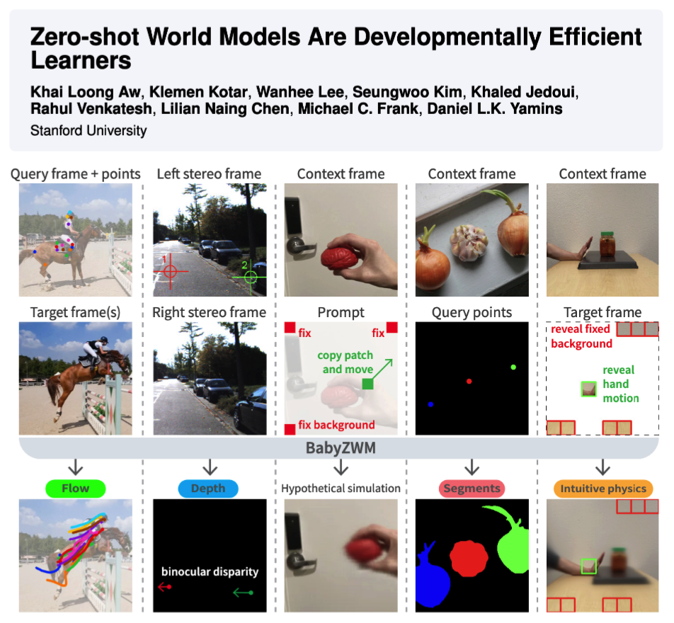
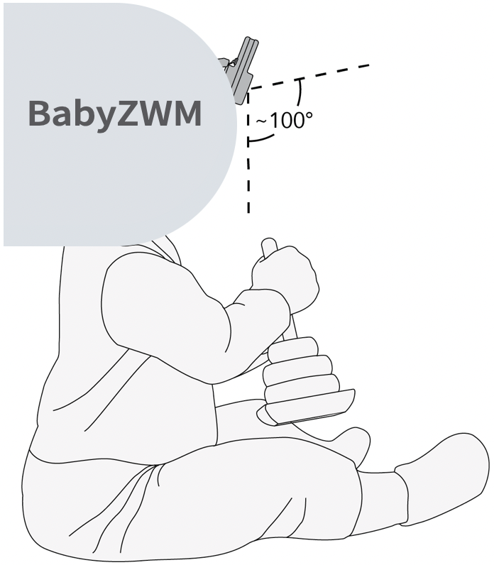

|
Khai Loong Aw I am a Computer Science PhD candidate at Stanford University. I work on building world models — for AI, cognitive science, and neuroscience. I am very fortunate to be advised by Daniel Yamins. Previously, I worked on making LLMs more human-like and more predictively accurate models of language processing in the human brain. In 2023, I worked with Antoine Bosselut and Martin Schrimpf at EPFL. In 2022, I worked with Mariya Toneva at the MPI for Software Systems. In my free time, I like to draw, rock climb, and cook. When I was young, I also represented Singapore playing chess. |

|
Research(see Google Scholar for all papers) |
|
  |
Zero-shot World Models Are Developmentally Efficient Learners
Khai Loong Aw, Klemen Kotar, Wanhee Lee, Seungwoo Kim, Khaled Jedoui, Rahul Venkatesh, Lilian Naing Chen, Michael C. Frank, Daniel L.K. Yamins 2026 arXiv / GitHub / HuggingFace Today's best AI needs orders of magnitude more data than a human child to achieve visual competence. We introduce the Zero-shot World Model (ZWM), an approach that substantially narrows this gap. Even when trained on the first-person experience of a single child, BabyZWM matches state-of-the-art models on diverse visual-cognitive tasks – with no task-specific training, i.e., zero-shot. Our work presents a blueprint for efficient and flexible learning from human-scale data, advancing a path toward data-efficient AI systems. |
|
|
Taming generative video models for zero-shot optical flow extraction
Seungwoo Kim*, Khai Loong Aw*, Klemen Kotar*, Cristobal Eyzaguirre, Wanhee Lee, Yunong Liu, Jared Watrous, Stefan Stojanov, Juan Carlos Niebles, Jiajun Wu, Daniel Yamins NeurIPS, 2025 arXiv / Website / GitHub We design KL-tracing, a novel method that uses KL divergence of prediction logits for extracting state-of-the-art optical flow from autoregressive video generative models. The key insight lies in our principled vision of using large world models to perform visual tasks (and extract visual intermediates for downstream use), because they capture challenging, long-tailed dynamics better than specialized models trained on limited data. |


|
Instruction-tuning Aligns LLMs to the Human Brain
Khai Loong Aw, Syrielle Montariol, Badr AlKhamissi, Martin Schrimpf, Antoine Bosselut COLM, 2024 arXiv Our goal is to build better, more human-like, and more predictively accurate models of language processing in the human brain by using NLP techniques. We show that instruction-tuning improves the alignment of LLMs with human brain activity, with model size and world knowledge playing key roles. |


|
Training language models to summarize narratives improves brain
alignment
Khai Loong Aw, Mariya Toneva ICLR, 2023 (Spotlight) arXiv / GitHub Our goal is to improve LLMs by taking inspiration from language processing mechanisms in the human brain. Our key insight is identifying that humans do not just passively predict the next token, but actively summarize and distill information when reading. We show that training language models to summarize narratives (i.e., deeper understanding of characters, emotions, and relationships) results in richer representations that are more aligned to human brain activity. |